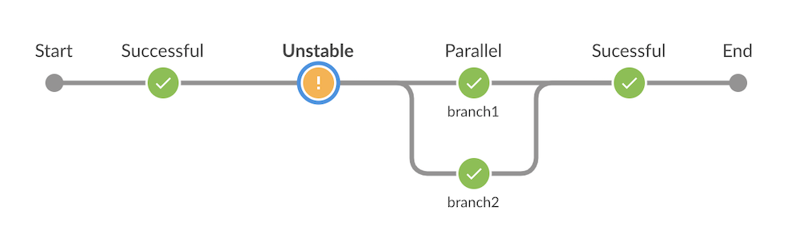

Jenkins 可视化阶段视图的改进
最近发布了的一些变更给了流水线编辑者新的工具以改善在 Blue Ocean 中的流水线可视化，有一个备受瞩目关注的工单JENKINS-39203，这会导致当流水线的构建结果为不稳定时所有的阶段都被设置为不稳定的。这个缺陷导致无法快速地识别为什么构建是不稳定的，使得用户必须查看完整的日志和 Jenkinsfile 才能弄明白究竟发生了什么。
为了修复这个问题，我们引入了一个新的流水线 API 用于为单个流水线步骤添加额外的结果信息。像 Blue Ocean 这样的可视化工具在决定阶段如何显示时会使用到这新的 API。像 junit 这样的步骤只能设置整个构建结果，现在可以通过新的 API 设置步骤级别的结果信息。我们创建了新的步骤 unstable 和 warnError，这样流水线编辑者在更复杂的场景下仍然可以利用这个新的 API。
该问题涉及到的重要的修复包含在如下的插件中，它们都需要 Jenkins 2.138.4 以及更新的版本：
- Pipeline: API 2.34
- Pipeline: Basic Steps 2.18 (需要同步更新到 Pipeline: Groovy 2.70)
- Pipeline: Graph Analysis 1.10
- Pipeline: Declarative 1.3.9
- Blue Ocean 1.17.0
这里是一条使用了 unstable 步骤的流水线在 Blue Ocean 中的截图，只会把失败的阶段标识为不稳定的：

例子
这里给出一些如何在你的流水线中使用该特性的示例：
- 使用新的步骤
warnError用于捕获错误，并把构建和阶段标记为不稳定的。warnError只需要一个字符串的参数，用于当捕获到错误时以日志的形式输出。当warnError捕获到一个错误时，它会记录该消息以及错误，并设置构建和阶段的结果为不稳定的。效果如下：
warnError('Script failed!') {
sh('false')
}
- 使用新的步骤
unstable设置构建和阶段结果为不稳定的。可以使用该步骤直接替换currentBuild.result = 'UNSTABLE'，在warnError不够灵活时这会比较有用。步骤unstable只需要一个字符串参数，当该步骤运行时会作为消息。使用的方法如下：
try {
sh('false')
} catch (ex) {
unstable('Script failed!')
}
- JUnit Plugin: 更新到 1.28 或者更高的版本，使得步骤
junit可以直接把该阶段设置为不稳定的。 - Warnings Next Generation Plugin: 更新到 5.2.0 或者更高的版本，使得步骤
publishIssues和recordIssues可以直接把该阶段设置为不稳定的。 - 其他插件: 如果你的流水线被其他插件中的步骤标记为不稳定的，请（在检查没有重复项后）给该组件提交一个新的 issue，清晰地描述哪个步骤是有问题的，以及发生问题的环境，并添加链接到该文章的开发者区域，以便维护者了解如何才能解决该问题。
局限
- 如果你不迁移到
unstable或warnError步骤，或不升级插件到集成来新 API 的情况下设置构建状态，那么即使构建是不稳定的，Blue Ocean 也不会把任何阶段显示为不稳定的。 - 即使在这些变化后，
currentBuild.result继续只会覆盖构建状态。不幸的是，由于currentBuild是作为全局变量而实现的，因此，无法让它设置步骤或者阶段级别的结果，这意味这它没有任何步骤级别的上下文可以使用到新的 API。 - Pipeline Stage View Plugin 尚未升级到使用这个新的 API，因此，这些变更不会在它提供的可视化中得到体现。
历史
Jenkins 流水线步骤可以以两种方式完成：成功并返回一个结果（可能为 null），或者是失败的，并抛出一个异常。当步骤失败并抛出异常时，该异常会贯穿整个流水线，直到有其他的步骤或者 Groovy 代码捕获，或者它到达流水线的顶层并导致流水线失败。基于抛出的异常的不同类型，流水线最终的结果可能不是失败（例如：某些情况下是被终止的）。基于异常传播的方式，像 Blue Ocean 这样的工具可以轻松地识别哪些步骤（以及阶段）是失败的。
为了能够让流水线能够与相应的 Jenkins API 交互，对于流水线构建来说，可以在构建期间修改构建结果也是有必要的。对于其他的，这使得流水线可以使用构建步骤以及原先出自于自由风格的任务中的项目。
在一些情况下，一个流水线步骤需要能够成功地完成，以便流水线可以继续正常执行，但对此而言能够标记有某种错误发生，因此，在可视化时能够识别到发生错误的步骤，即使没有彻底失败。比较好的一个例子就是 junit 步骤。该步骤关注特定的测试结果，如果有任何错误，会把整个构建结果标记为不稳定的。这种行为对类似 BlueOcean 的可视化工具而言是有问题的，因为该步骤是成功的，而且无法通过编程的方式覆盖于该步骤相关的最终结果。
再次查看下 JENKINS-39203，我们看到关于可视化有两项基本的选项。因为有的步骤导致构建变成不稳定的，设置总体的构建结果是不稳定的，或者所有的步骤都成功完成来也展示为不稳定的；或者由于我们没有办法把特定步骤相关的构建结果作设置，它们可能显示为成功的。最后，选择了第一个选项。
为了解决该问题，部分用户尝试通过抛出异常并在阶段中增加 try/catch 这样的代码块用于处理异常，这样 Blue Ocean 能够借助这些异常来标记步骤和阶段的结果为期望的状态，而且，捕获异常后，流水线可以继续正常执行。这种方式不容易理解，脆弱，而且无法在申明式的流水线中使用。
开发者
如果你是一个插件的开发者，并在集成流水线时使用了步骤，想要利用这个新的 API 的话，你的步骤就可以给出一个非成功的结果，而不是抛出异常。请查看 Jenkins 开发者邮件列表中的这个帖子，如果你遇到任何问题了，可以在那里提问。